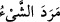

Mü’minûn, 23/10) buyurmuştur. Cennet onların atası Âdem (a.s.)’ın yurdu olunca, ona
yakın olanların bulunması uzak olanları mirastan mahrum kılar. Âdem (a.s.)’ın
çocuklarının kendisine en yakın ve mutlak olarak en üstün olanı Muhammed (a.s.) ve
ümmetidir. Onun için cennetin üçte ikisi en yakın olan asla âiddir. Üçte biri de uzak olan
ferde kalmıştır. Çünkü Muhammed ümmeti diğer ümmetler arasında kemâle en yakın
olan ümmettir. Tıpkı erkeğin kadına göre kemâle daha yakın olması gibi. Mirasta
“erkeğin hakkı, iki kadın payı kadardır.” (Bk. en-Nisâ, 4/11, 176) İşte bu sırdan
dolayı Âdem (a.s.) cennette “Ebû Muhammed (Muhammed’in babası)” künyesi ile
anılır. Şüphesiz Âdem (a.s.) beşeriyetin babası olduğu gibi Hz. Peygamber (a.s.)
ruhların babasıdır.”
3. İnsanlardan, bilgisi olmaksızın Allah hakkında tartışmaya giren ve her inatçı
şeytana uyan birtakım kimseler vardır.
“İnsanlardan, bilgisi” ilmi, ma’rifeti, delil ve hucceti “olmaksızın” olmadığı halde
“Allah hakkında tartışmaya giren” Allah hakkında hiç hayrı olmayan bâtıl sözler
söyleyen “ve” tartışmasında, bütün hallerinde “her inatçı” sırf fesâd ile uğraşan ve
hayırlardan soyunmuş “şeytana uyan birtakım kimseler vardır.” Âyette bahsedilen
Nadr b. Hâris’tir. O, cedelleşmek üzere “Melekler Allah’ın kızlarıdır”, “Kur’an
öncekilerin masallarıdır” ve “Öldükten sonra tekrar diriltme yoktur” derdi.
“
” münâkaşa ve vuruşma yoluyla karşı karşıya gelmektir. Aslı “
(İpi
sağlamca büktüm)” sözünden gelmektedir. Birbiriyle tartışan iki kimseden her biri de
diğerini görüşünden büker/uzaklaştırır.
Âyet, delile dayanmadan ve cehâlet ile Allah’ın zâtı ve sıfatları hakkında tartışmaya
giren her kâfir hakkında geçerlidir. et-Te’vîlâtü’n-Necmiyye’de der ki: “İşâret
etmektedir ki Allah hakkında tartışmaya giren kimsenin Allah’la ilgili ilmi ve ma’rifeti
yoktur. Aksi halde O’nun hakkında tartışmaya girmez ve O’na teslim olurdu. Allah
hakkında tartışmaya giren kimse ancak şeytana uyduğu için böyle yapar. Nitekim âyette
böyle buyrulmuştur.”
“Her inatçı şeytana uyan”, kendilerinden aşağıda bulunanları inkâra çağıran
kâfirlerdir ya da İblis ve askerleridir. Bir şey benzerlerine göre haddi aştığı zaman “
” denir. Asıl anlamı boş ve sıyrılmış olmaktır. Tüysüz oğlana “
”,
yapraksız dala ise “
” denir. Rivâyete göre “Cennet ehli sakalsızdırlar.”[3] Bu
hadis, zâhirine hamledildiği gibi ‘Onlar her türlü çirkinliklerden ve kirlerden uzaktırlar’
anlamında olduğu da söylenmiştir.